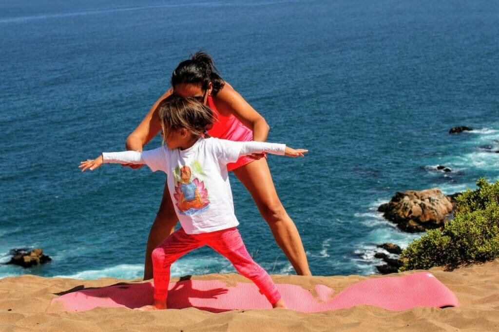

Durante los últimos años la difusión del yoga ha crecido, y cada día más personas eligen incorporar la disciplina en su vida cotidiana. Esta práctica milenaria le ha permitido a muchos, alrededor del mundo, mejorar el control de la respiración, calmar las tensiones físicas y descubrir los límites de su propio cuerpo. Así, se puede cultivar una sensibilidad especial hacia lo físico, emocional y cognitivo, estableciendo un balance entre la quietud inspiradora y los movimientos.
Algo especial ocurre cuando se comienza a practicar yoga a temprana edad, porque es en ese momento crucial de la vida en el que aprendemos cosas que jamás olvidamos; rutinas que se vuelven hábitos y que a su vez nos definen como seres humanos.
El crecimiento de la disciplina puede verse en la cantidad de corporaciones, entre ellas Google, que la han incluido como actividad gratuita para los empleados. Por otro lado, en diciembre de 2015, se organizó en México la Comisión de Deporte y secretaría para los Derechos de la Niñez, para ofrecer un foro titulado “Yoga aplicado al deporte como mecanismo de control de agresividad y obesidad en la niñez” Los datos muestran que hay un avance en su incorporación a la vida diaria; sin embargo, aún faltan muchos por conocer las bondades que puede brindarle al espíritu y a la salud de los chicos.
Una de las principales metas durante las clases de yoga para niños, es que cada participante aprenda a escuchar a su cuerpo, que interactúe con su entorno y con el medio ambiente. De esa forma, poco a poco se va diluyendo la inhibición que muchas veces es provocada por las estructuras de las instituciones altamente disciplinadas, en las que tradicionalmente crecen los chicos.
No se trata de que la educación clásica esté mal o bien, sino de resaltar la importancia de tener una actividad complementaria que alimente al espíritu desde temprana edad. De esa forma, se convierte en algo distinto al resto de las tareas diarias de un niño, ya que es un espacio cómodo, lúdico, tranquilo, en el que es imposible equivocarse, y al cual los pequeños van para ser libres. En las clases, cada participante podrá aumentar y disminuir de forma rítmica sus niveles de energía hasta aterrizar en un lugar de auténtica calma. Mientras ellos se mueven, al realizar cada una de las posturas, la atmósfera entre todos va tomando una fluidez muy enriquecedora.
Está comprobado que en casos de impulsividad o hiperactividad, esta práctica trae resultados beneficiosos a largo plazo. En una investigación del año 2013, conducida por las psicólogas Carolina Baptista y Lisiane Bizarro, en colaboración con Shirley Telles, del Departamento de Investigación de Yoga de la Fundación Patanjali de Haridwar, India, se concluyó que: “técnicas como la realización de posturas de yoga, regulación de la respiración, relajación y meditación, pueden tener implicaciones clínicas para la salud física y mental” Se trata de plantar una semilla en la infancia que crecerá dentro de cada ser.
Con el tiempo, mientras esa semilla crece, el infante incorpora lo que su mente y su cuerpo han aprendido a través de la respiración y los movimientos, en cada aspecto de su existencia. Esto no es algo que ocurra de forma consciente, por el contrario, se trata de una forma de ser que se va conformando para llevarse al salón de clases, al hogar, y a los seres queridos.
Cuestiones como el autocontrol, la tranquilidad y la paciencia, no se pueden imponer con palabras y reprimendas; son hábitos que se cultivan y se desarrollan naturalmente cuando el humano está en equilibrio, tanto consigo mismo como con su entorno.